Pythonスクリプトで拡張可能なテキストエディタ [ LREdit ]
| 著作者: | craftware |
|---|---|
| 連絡先: | craftware@gmail.com |
| 開発環境: | Python + VisualC++2010 |
| 種別: | フリーウェア |
| 動作環境: | Windows XP/Vista/7/8 |
| Webサイト: | http://sites.google.com/site/craftware/ |
はじめに
このソフトウェアは、柔軟なカスタマイズが可能なテキストエディタです。
プログラマにとって便利な機能を備えています。
特徴
- 主にキーボードで操作
- スクリプト言語 Python で機能拡張が可能
- 複数ドキュメント
- 2画面モード
- シンタックスハイライト
- 補完入力
- Grep 機能
- Diff 機能
- TAGS ジャンプ
- プロジェクト機能
- ブックマーク機能
- アウトライン解析
- 矩形選択
- テーマと壁紙
- UNICODE ベース
追加予定の機能
- 罫線モード
- InteliSenseライクな補完
- コードブロックの折りたたみ
- キーボードマクロ
- などなど
対応言語
- C
- C++
- C#
- Java
- Python
- JavaScript
- GLSL
- XML
- HTML
- Makefile
- Batch
- Text
- ユーザ定義が可能
スクリーンショット
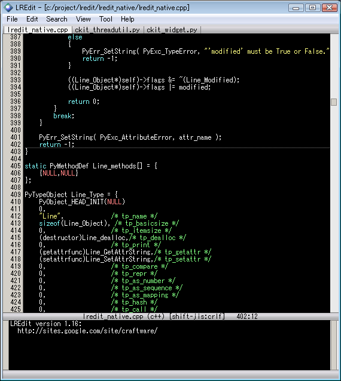シングルペインモード。
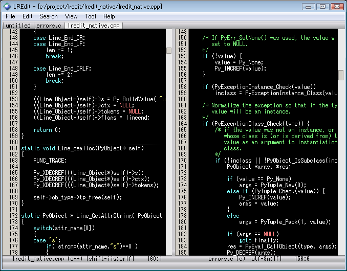２ペインモード。
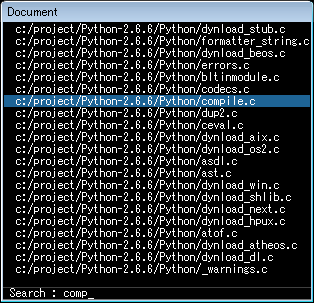ドキュメント選択ウインドウ。このウインドウではインクリメンタルサーチ可能。
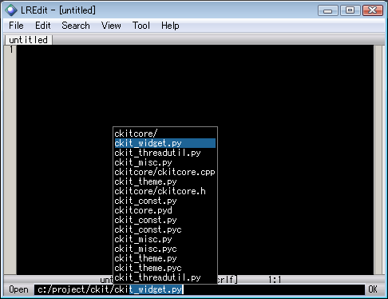CraftLaunch風のファイル名の補完入力。
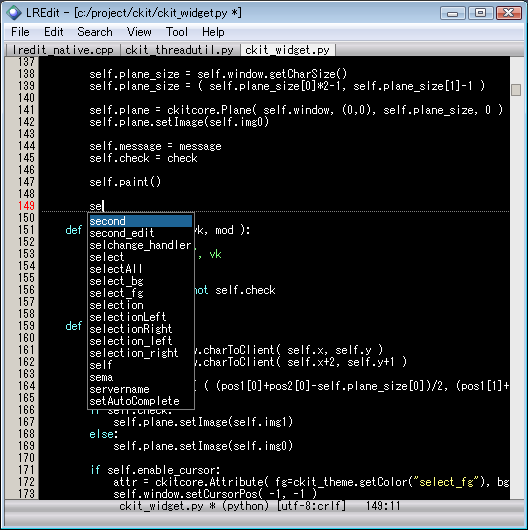単語補完機能。開いているすべての文書の中の単語を使って補完される。
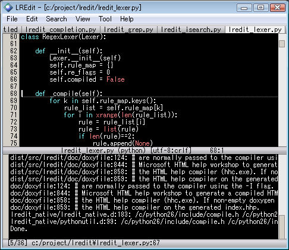内蔵の Grep 機能。Grep はサブスレッドで行われるので、編集作業を中断せずに可能。
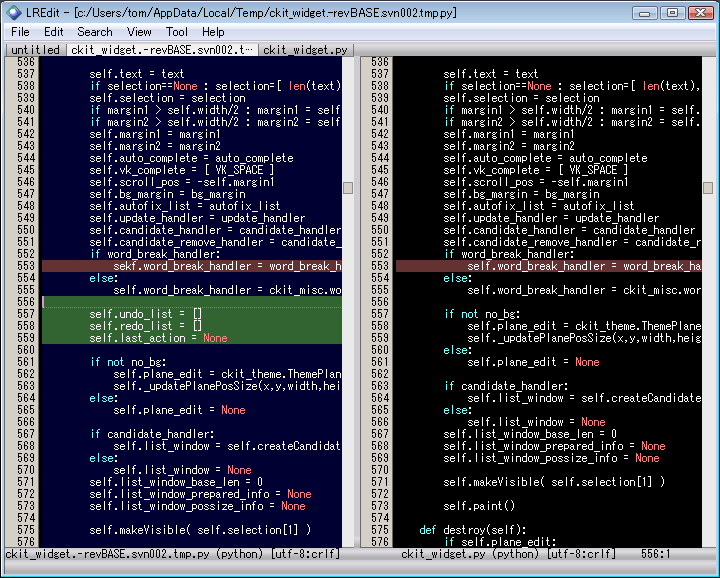内蔵の Diff 機能。ファイルの差分を色付けして表示することができる。
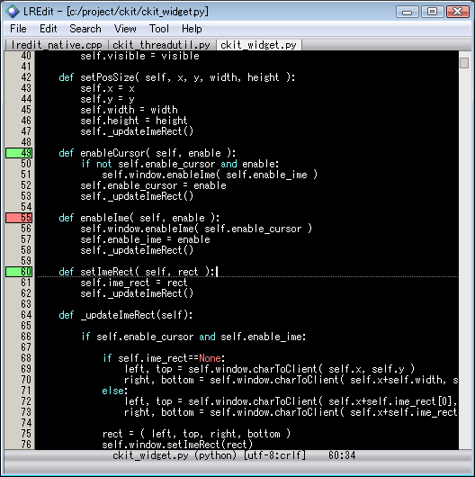行単位のブックマーク機能。ブックマークには３種類から選べる。
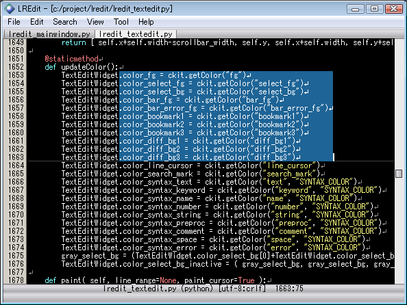矩形選択機能。矩形範囲でのクリップボード操作が可能。
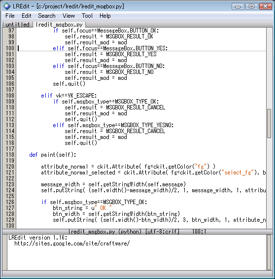白テーマ。テーマは自作することもできる。
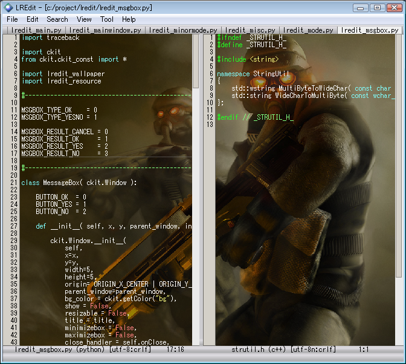壁紙。文字が見にくくならないように、壁紙の色を背景色に近づけることができる。
{kind=link}
{kind=link}
{kind=link}
{kind=link}
{kind=link}
{kind=link}
{kind=link}
{kind=link}
{kind=link}
{kind=link}
{kind=link}
動作環境
LREditの実行には以下の環境が必要です。
Windows XP/Vista/7/8
配布 / 保障について
このソフトウェアを二次配布する場合は、作者に事前連絡してください。
このソフトウェアを改造して配布してはいけません。
このソフトウェアの設定や機能追加は自由に配布して構いません。
また、本ソフトウェアの使用によるいかなる損害も保障しかねますので、 プログラムの実行は本人の責任で行ってください。
サポートについて
LREditに関する質問や要望は、
http://sites.google.com/site/craftware/lredit/

までお願いします。
インストール/アンインストール
インストール
配布されたファイルを解凍すると以下のファイルとフォルダが作成されます。
名前 解説 lredit.exe プログラム本体 python33.dll Pythonランタイムライブラリ library.zip スクリプトが格納されているアーカイブ _config.py デフォルト設定ファイル readme_en.txt 最初に読む文書 (英語) readme_ja.txt 最初に読む文書 (日本語) lib/ DLLが格納されているディレクトリ extension/ ユーザサイドのスクリプトを入れるディレクトリ theme/ テーマのデータが格納されているディレクトリ dict/ Migemoの辞書を入れるディレクトリ doc/ ドキュメントが格納されているディレクトリ license/ コピーライト情報が格納されているディレクトリ また、最初の起動で、アプリケーションデータディレクトリに自動的に以下のファイルが作られます。 ( XP では c:/Documents and Settings/Application Data/LREdit、Vista/7 では c:/Users/tom/AppData/Roaming/LREdit)
名前 解説 config.py 設定ファイル lredit.ini 状態保存ファイル config.py と lredit.ini は、lredit.exe と同じディレクトリにおいておけば、 そちらが優先的に使われます。USBメモリなどで持ち歩く際に便利な方法です。
アンインストール
インストールしたフォルダごと消してください。
また、アプリケーションデータディレクトリを削除してください。 ( XP では c:/Documents and Settings/Application Data/LREdit、Vista/7 では c:/Users/tom/AppData/Roaming/LREdit)
このソフトウェアはレジストリを使用しません。
使用しているサードパーティ製ソフトウェアについて
このソフトウェアでは、以下のライブラリ/プログラムを使用しています。
- Python Programming Language
- http://www.python.org/
- Python Imaging Library
- http://www.pythonware.com/products/pil/
- comtypes
- http://pypi.python.org/pypi/comtypes/
- C/Migemo
- http://www.kaoriya.net/
- Pygments
- http://pygments.org/ (シンタックスハイライトのための正規表現の定義のみ使用)
- zenhan-py
- http://code.google.com/p/zenhan-py/
- Exuberant Ctags
- http://ctags.sourceforge.net/ (TAGS作成用の独立したプログラムとして同梱)
基本的な使い方
各部の説明
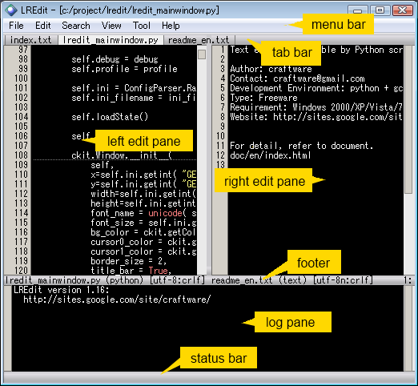メニューバー から、ファイルオープンやクリップボードからの貼り付けといった コマンドを実行することができます。 メニューバーは設定メニューによって非表示にすることも可能です。
タブバー には、オープン中の文書がタブで表示されます。タブをクリックすることで、 アクティブなドキュメントを切り替えることができます。
テキスト編集領域 は、左右に最大2つまで表示されます。 テキスト編集領域の左側には、行番号が表示されます。 行番号の部分は、ブックマークや行の変更の有無も表示されます。
テキスト編集領域のすぐ下には、編集している文書の状態が表示される フッタ領域 があります。フッタ領域には、ファイル名やモード、エンコーディング、キャレット位置 などが表示されます。
フッタ領域の下には、 ログペイン があります。 ログペインは、LREditが内蔵している、Python の標準出力、標準エラーが表示されます。
ウインドウの一番下には、 ステータスバー があります。
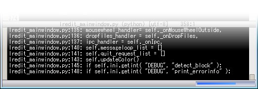ステータスバーにはユーザの操作に対するフィードバックとして、メッセージが表示されるほか、 時間のかかる処理をしている際は、 プログレスバー が表示されます。
また、ステータスバーの領域には、文字列の入力を行う際に、1行の文字列編集領域が 表示されます。これを コマンドライン と呼びます。コマンドラインは、 コマンドを実行するために使われる場合もあれば、ファイルオープンのためのファイル名の 入力、文字列検索のための文字列の入力、といったさまざまな文字列入力のために使われます。
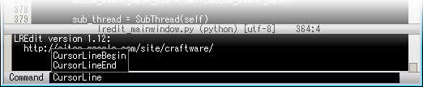コマンドラインによるコマンドの実行は、メニューバーに比べると操作に慣れが必要ですが、 コマンドの補完機能や、インタラクティブなパラメタの設定など、強力な機能を持っています。
キーボード操作
このソフトウェアは、主にキーボードを使って操作します。 キーのアサインは以下のとおりです。
キー 解説 ↑/↓/←/→ カーソル移動 Ctrl + ←/→ 単語単位のカーソル移動 Ctrl + ↑/↓ スクロール PageUp/PageDown ページ単位スクロール Home/End 行頭/行末へ移動 Alt + ↑/↓ ブックマークか変更行へ移動 Alt + Shift + ↑/↓ ブックマークか変更行まで範囲選択 Ctrl + Home/End 文書の先頭/末尾へ移動 Ctrl + L 現在のカーソル位置を中央に表示 Shift + ↑/↓/←/→ 範囲選択 Ctrl + Shift + ↑/↓ スクロールしながら範囲選択 Ctrl + A 文書全体を選択 Return 改行とオートインデント Tab インデントかTab文字の挿入 Shift + Tab アンインデントかTab単位の左移動 Delete 右の文字を削除 BackSpace 左の文字を削除 Ctrl + D 右の文字を削除 Ctrl + H 左の文字を削除 Ctrl + Delete 右の単語を削除 Ctrl + BackSpace 左の単語を削除 Ctrl + K 行末まで削除 Ctrl + C コピー Ctrl + X 切り取り Ctrl + V 貼り付け Ctrl + Z 元に戻す Ctrl + Y やり直し Ctrl + N 次を検索 Ctrl + Shift + N 前を検索 Ctrl + B 対応括弧へ移動 Ctrl + Shift + B 対応括弧まで範囲選択 Ctrl + Space 補完リストの表示 Ctrl + M ブックマーク1の設定/解除 Ctrl + Alt + ←/→ 左右のペイン分割位置を移動 Ctrl + Alt + ↑/↓ 上下のペイン分割位置を移動 Shift + Escape バックグラウンド処理をキャンセル Ctrl + Minus 左右のペイン分割位置をセンタリング Ctrl + Shift + Minus アクティブなペインを最大化 Ctrl + F4 文書を閉じる Ctrl + Q 文書を閉じる Alt + F4 終了する Ctrl + Tab 次の文書をアクティブにする Ctrl + O ファイルを開く Ctrl + S ファイルを保存する Ctrl + J 行番号またはシンボル名を入力してジャンプする Ctrl + F 検索する Ctrl + R 置換する Ctrl + Shjft + F Grepする F4 シンボル定義位置へジャンプ Shift + F4 シンボルジャンプの履歴を戻る F11 ジャンプリストの次へ Shift + F11 ジャンプリストの前へ Alt + X コマンドラインを開く Ctrl + E 拡張メニューの表示 Ctrl + E Ctrl + W １画面モードと２画面モードを切り替える Ctrl + E Ctrl + D 文書の一覧を表示する Ctrl + E Ctrl + P プロジェクト中のファイル一覧を表示する Ctrl + E Ctrl + H 最近開いたファイルの一覧を表示する Ctrl + E Ctrl + M ブックマーク一覧を表示する Ctrl + E Ctrl + O アウトライン解析してシンボル一覧を表示する Ctrl + E Ctrl + R アウトライン解析してシンボル一覧を表示する
マウス操作
このソフトウェアは、ほとんどキーボードを使って操作しますが、 少しだけマウスで操作することが出来ます。
マウス操作 解説 ファイルをドロップ ファイルを開く 左クリック カーソルの移動 左ドラッグ 範囲選択 Shift + 左クリック 範囲選択 Alt + 左ドラッグ 矩形選択 左ダブルクリック 単語選択 左ダブルクリックからドラッグ 単語単位の範囲選択 行番号部分を左クリック 行選択 行番号部分を左ドラッグ 行単位の範囲選択 行番号部分をShift + 左クリック 行単位の範囲選択 ホイール回転 スクロール タブバーを左クリック 文書の切り替え 縦のスプリッタのドラッグ 左右の分割位置の移動 横のスプリッタのドラッグ 上下の分割位置の移動
ファイルのオープン
LREdit でファイルを開く方法はいくつかあります。
- メニューバーの [ファイル] > [開く] からファイル名を入力する
- Ctrl + O で ファイル名を入力する
- Alt + X で ファイル名を入力する
- Alt + X で Open コマンドにファイル名を渡す (例: Open;c:/aaa/bbb.txt )
- ファイルを LREdit のウインドウに Drag & Drop する
- ファイルを LREdit のアイコンに Drag & Drop する
- LREdit の起動引数にファイル名を渡す
最近開いたファイルのオープン
最近開いたファイルは履歴に残っています。履歴からファイルを再度開くことができます。
- メニューバーの [ファイル] > [最近のファイル] から選択する
- Ctrl + E Ctrl + H で最近開いたファイルのリストを表示する。
- RecentFileList コマンドで最近開いたファイルのリストを表示する。
- Ctrl + O で ファイル名を入力する際に表示される補完候補を利用する。
最近開いたファイルリストのウインドウでは、以下のキーが使用できます。
キー 解説 ↑/↓ 選択 Enter 決定 Escape 中断 F インクリメンタルサーチの開始 Space フルパス表示のOn/Off Delete 削除 ←/→ プロジェクトファイルモードの切り替え
ドキュメントの切り替え
LREdit は複数のドキュメントを同時に開くことができます。以下のようにして ドキュメントを切り替えることができます。
- メニューバーの [表示] > [文書選択] で、ドキュメントリストを表示する。
- タブバーのタブをクリックする。
- Alt + X で ファイル名を入力する
- Alt + X で DocumentList コマンドを実行して、ドキュメントリストを表示する。
- Alt + X で Document コマンドを実行し、ドキュメント名を入力する。
- Ctrl + TAB を押して順番に切り替える。
ドキュメントリストのウインドウでは、以下のキーが使用できます。
キー 解説 ↑/↓ 選択 Enter 決定 Escape 中断 F インクリメンタルサーチの開始 Space フルパス表示のOn/Off
ブックマーク機能
LREdit には、作業している箇所に目印をつけるための、ブックマーク機能が備わっています。 ブックマークは、任意のテキストファイルの、任意の行に設定することができ、LREdit を終了した後も 保存されています。
以下のようにしてブックマークを設定することができます。
- メニューバーの [ツール] > [ブックマーク1]/[ブックマーク2]/[ブックマーク3]
- Ctrl + M
- Alt + X から [Bookmark1]/[Bookmark2]/[Bookmark3]/[Bookmark123] コマンドを実行
また、以下のようにしてブックマークを一覧することができます。
- メニューバーの [ツール] > [ブックマーク一覧]
- Ctrl + E Ctrl + M
- Alt + X から [BookmarkList] コマンドを実行
ブックマーク一覧ウインドウでは、以下のキーが使用できます。
キー 解説 ↑/↓ 選択 Enter 決定 Escape 中断 F インクリメンタルサーチの開始 Space フルパス表示のOn/Off Delete 削除 ←/→ ローカルモードとグローバルモードの切り替え ブックマークの一覧表示には、ローカルとグローバルの2つのモードがあります。 ローカルモードでは、オープンされているファイル、および現在のプロジェクトに登録されているファイルのブックマークだけが表示されます。 グローバルモードでは、LREditが保存している全てのブックマークが表示されます。
２画面モード
LREdit は、左右に２つのテキスト編集領域を開くことができます。これを２画面モードと 呼びます。
１画面モードと２画面モードを切り替えるには、次のように行います。
- メニューバーの [表示] > [他方のペイン] を選択する
- コマンドラインから AnotherPane を実行する
- Ctrl + E Ctrl + W を入力する
また、メニューバーの [検索] > [比較] などから、ファイルの比較を実行すると、 自動的に２画面モードに変更されます。
２画面モード中に [表示] > [他方のペイン] や AnotherPane を実行すると、 アクティブなタブがもう片方の編集ペインに移動します。
片方のペインの全てのタブを閉じると、自動的に１画面モードに戻ります。
２画面モードで、Ctrl + TAB を押すと、左右のペインの間でフォーカス切り替えを行います。 Ctrl キーを押したまま、連続で Ctrl + TAB を押すと、タブの切り替えを行います。
コマンドライン
コマンドラインは、いくつかの目的で使用します。
- コマンド名を入力してコマンドの実行
- ファイル名を入力してファイルのオープン
- ドキュメント名を入力してドキュメントの切り替え
- モード名を入力して、モードの切り替え
- コマンド実行時のインタラクティブなパラメタの入力
- テキスト入力式の計算機
コマンドラインの操作方法
コマンドラインの入力は自動補完され、数少ないキー入力で目的の文字列を入力することが出来ます。
キー 解説 Tab 補完 ↑/↓ 補完候補の選択 セミコロン 選択範囲の確定またはセミコロンの入力 ピリオド 選択範囲の確定またはピリオドの入力 スラッシュ 選択範囲の確定またはスラッシュの入力 バックスラッシュ 選択範囲の確定またはバックスラッシュの入力 その他の文字入力 文字入力 Enter 入力の決定 Escape 入力の中断
コマンド実行機能
コマンドを入力して、さまざまなアクションを実行する機能です。
主なコマンドの一覧
コマンド名 解説 New 新しいファイルを開く Open ファイルを開く Save ファイルを保存する SaveAs ファイルを名前をつけて保存する SaveAll 開いているすべてのファイルを保存する Close ファイルを閉じる Duplicate ファイルをもうひとつの編集ペインで開く AnotherPane ファイルをもう一つの編集ペインに移動する Mode モードを変更する MinorMode マイナーモードをOn/Offする Search 検索する Replace 置換する Compare ファイルを比較する CompareOptions ファイル比較時のオプションを設定する Grep 複数のファイルから検索する Jump 行番号またはシンボル名を入力してジャンプする JumpLineNo 行番号を入力してジャンプする SelectBlock 矩形選択モードを有効にする RemoveTrailingSpace 選択範囲の行末スペースを削除する ExpandTab 選択範囲のTab文字をスペース文字に展開する RemoveEmptyLines 選択範囲の空行を削除する RemoveMarkedLines 選択範囲のぼっくマークされた行を削除する RemoveUnmarkedLines 選択範囲のぼっくマークされてない行を削除する ToUpper 選択範囲を大文字に変換する ToLower 選択範囲を小文字に変換する ToZenkaku 選択範囲の指定した文字種に関して全角文字に変換する ToHankaku 選択範囲の指定した文字種に関して半角文字に変換する ConfigMenu 設定メニューを開く EditConfig config.py を開く ReloadConfig config.py をリロードする Wallpaper 画像のファイル名を入力し壁紙に設定する About バージョン情報をログペインに出力する Open や Mode など、いくつかのコマンドは、コマンドラインから引数を受け取ることができます。 引数は、以下のようにセミコロンで区切って渡します。
Open;c:/project/foo/bar.txt引数を渡さなかった場合は、インタラクティブにパラメタを入力します。
Open c:/project/foo/bar.txtLREditには他にもたくさんコマンドがあります。 Alt + X でコマンドラインを開き、 何も入力しない状態で Tab キーを押すと、使用可能なすべてのコマンドがリストアップ されます。コマンドの詳細については APIリファレンス を参照してください。
ファイルオープン機能
ファイル名を入力して、ファイルをオープンする機能です。 Open コマンドの動作と同等です。
c:/project/foo/bar.txtセミコロンで区切って、複数のファイルをオープンすることもできます。
c:/project/foo1.txt;c:/project/foo2.txtコマンド名と同様に、ファイル名も自動補完されます。
ドキュメント切り替え機能
ドキュメント名を入力して、ドキュメントアクティブ化する機能です。 Document コマンドの動作と同等です。
bar.txtコマンド名と同様に、ドキュメント名も自動補完されます。
テキスト入力式の計算機
数式を解釈して結果を表示するおまけ機能です。
整数と浮動少数を扱うことが出来ます。
数式の中で以下の関数や定数を使用することが出来ます。:
sin, cos, tan, acos, asin, atan, e, fabs, log, log10, pi, pow, sqrt複数回 Enterキーを押すことで、10進と16進で結果を切り替えて表示することが出来ます。
12+34+45 => 91 12*34+45 => 453 12*(34+45) => 948 log(10) => 2.302585
検索/置換
検索
文書の中で特定の文字列を検索することができます。
下のいずれかの操作を行うと、コマンドラインに検索条件を入力する状態になります。
- メニューバーの [検索] > [検索] を選択する
- Ctrl + F を押す
検索条件には、検索文字列、単語単位で検索をするか、大文字小文字を区別するか、 正規表現を使用するか、を設定します。
キー 解説 Return 検索の実行 Escape 検索のキャンセル Ctrl + ↑ 前を検索 Ctrl + ↓ 次を検索 Ctrl + W 単語単位での検索をOn/Off Ctrl + E 大文字小文字の区別をOn/Off Ctrl + R 正規表現をOn/Off テキスト編集領域の、検索条件に一致する部分には、アンダーラインが表示されます。
検索を行ったあと、同じ条件で、次の位置または前の位置を検索することができます。
キーまたはメニュー 解説 Ctrl + N 次を検索 Ctrl + Shift + N 前を検索 [検索]>[次を検索] 次を検索 [検索]>[前を検索] 前を検索 正規表現の書式については、下記を参照してください。
Python ライブラリリファレンス 正規表現のシンタクス
置換
文書の中の、指定したパターンの文字列を、別の文字列に置き換えることができます。
下のいずれかの操作を行うと、コマンドラインに検索条件を入力する状態になります。
- メニューバーの [検索] > [置換] を選択する
- Ctrl + R を押す
検索と同様に、置換に関しても、正規表現などの条件を使用することができます。
検索条件を入力した後、次に置換後の文字列を入力すると、置換が一箇所ずつ実行されます。
キー 解説 Return 置換の実行 Escape 置換の中断 Ctrl + ↑ 前を検索 Ctrl + ↓ 次を検索 Shift + Return ファイルの末尾まで全て置換 検索条件に正規表現のグループが使われている場合、置換後の文字列にヒットした文字列の一部を再利用することができます。
置換後文字列 解説 \0 ヒットした文字列全体 \1～\9 グループ0 から グループ9 \t TAB文字 \n 改行 \ \ \ 自身 正規表現のグループについては、下記を参照してください。
Python ライブラリリファレンス 正規表現のシンタクス
Grep
LREditは、Grep機能を内蔵しています。Grepは、複数のファイルの中から文字列を検索する機能です。
下のいずれかの操作を行うと、コマンドラインに検索条件を入力する状態になります。
- メニューバーの [検索] > [ファイルから検索] を選択する
- Ctrl + Shift + F を押す
以下の検索条件を順番に入力します。
- 検索文字列
- ファイル名パターン
- 検索対象
- 検索ディレクトリ
- 無視するディレクトリ名のパターン
検索対象の入力時、以下のいくつかのタイプのうちから１つを入力することができます。
検索対象 解説 Directory 指定したディレクトリのファイル Directory.Recursive 指定したディレクトリ以下のファイル Project プロジェクト中のファイル全て 検索するファイル名のパターンと、除外するディレクトリ名のパターンでは、* と ? を のようなワイルドカードを使用することができます。また複数のパターンをスペース文字で区切って 指定することができます。
* *.cpp *.c *.h makefile .svn CVS RCSまたファイル名パターンに関しては ! を使って除外するパターンを指定することができます。
* !*.obj !*.exe !tags検索条件を全て入力し終わる前に、Ctrl を押しながら Return を押して決定すると、 後続の条件の入力を省略し、前回の条件を利用して検索を開始することができます。
検索は、バックグラウンドで実行され、テキストの編集作業を中断することなく実行されます。 検索にヒットした位置は、ログペインに出力されます。
検索結果へは、以下のようにしてジャンプすることができます。
キーまたはメニュー 解説 F11 ジャンプリストの次へ Shift + F11 ジャンプリストの前へ 検索処理を中断するには、Shift + Escape を押します。
比較
LREdit は ２つのファイルの内容を比較して、差分を色付けして表示することができます。
- メニューバーの [検索] > [比較] を選択する
- コマンドラインから Compare コマンドを実行する
すでに２画面モードならば、左右の文書を比較します。
１画面モードならば、コマンドラインで比較対象のファイルを指定します。
以下のようにして、差分位置へジャンプすることができます。
キーまたはメニュー 解説 F11 ジャンプリストの次へ Shift + F11 ジャンプリストの前へ CompareOptions コマンドを呼び出すことで、ファイル比較時のオプションを設定することができます。
設定値 解説 Strict 厳密に比較する Ignore.Case 大文字小文字の違いを無視する Ignore.WhiteSpace 空白文字の変化を無視して比較する オプションは、カンマで区切って、複数指定することができます。
単語補完
LREdit は、テキストの入力を効率的に行うための、補完機能を持っています。 LREdit で現在オープンしている全てのテキストファイル中の単語を使って、 補完入力が行われます。
たとえば、
def Hello(): print( "Heこのように He まで入力したところで、Ctrl-Space を押すと、
def Hello(): print( "Helloのように、Hello と補完されます。
キー 解説 Ctrl + Space 補完の実行 ↑/↓ 補完候補の選択 Tab 補完候補の共通部分まで確定 Return 補完候補の決定 Escape 補完候補リストのキャンセル
矩形選択
LREdit は、通常のテキスト選択に加えて、矩形選択モードをサポートしています。 矩形選択モードでは、下の図のように、矩形で囲まれる範囲を選択することができます。
下のいずれかの操作を行うと、矩形選択モードになります。
- Alt を押しながら左ドラッグ
- SelectBlock コマンドを実行
矩形選択状態で、Ctrl-C や Ctrl-X を押すと、その矩形範囲に対して、コピーやカットの操作を行います。 また、矩形モードでクリップボードに格納したテキストを、Ctrl-V で貼り付けると、矩形モードでの貼り付けが行われます。
キー 解説 Ctrl + C 矩形範囲のテキストをコピー Ctrl + X 矩形範囲のテキストを切り取り Ctrl + V 矩形範囲のテキストを上書きして貼り付け Shift + ↑/↓/←/→ 矩形モードのまま範囲選択 Delete/BackSpace 矩形範囲を削除 Escape 範囲選択の解除
プロジェクト
LREdit では、編集作業や開発プロジェクトに関係のあるファイルだけを、 プロジェクトファイル としてまとめておき、 作業を効率化することができます。プロジェクトファイルの拡張子は [ *.lre ] です。
LREdit のプロジェクトファイルは、単に行区切りでファイル名を列挙したテキストファイルです。 プロジェクトの編集は、テキストエディタで行います。
メニューバーの [ファイル] > [プロジェクト] > [開く] を選択し、プロジェクトファイルの名前を入力すると、そのプロジェクトファイルをロードすることができます。
メニューバーの [ファイル] > [ファイル一覧] を選択するか、Ctrl + Shift + O を入力すると、プロジェクトファイル中のファイルリストが表示されます。
使用中のプロジェクトファイルを、任意のテキストエディタで編集すると、自動的にリロードされます。 メニューバーの [ファイル] > [プロジェクト] > [編集] を選択すると、LREdit 自身でプロジェクトファイルを編集することができます。
高度な使い方
拡張メニュー/マルチストロークキーバインド
Ctrl + E には、拡張メニューが割り当てられています。 拡張メニューは、アクティブなテキスト編集領域のカーソル付近に表示されます。
拡張メニューには config.py で項目を追加することができますが、デフォルトでは以下の項目が 登録されています。
項目 キー 解説 画面モード Ctrl + W １画面モードと２画面モードを切り替える 文書リスト Ctrl + D 文書の一覧を表示する LREditでは、この拡張メニューがマルチストロークなキーバインドを実現するためにも使われます。 マルチストロークなキーバインドとは、Emacs や Xyzzy での [ Ctrl+X Ctrl-F ] のような、 複数の連続したキー入力にアクションを割り当てることです。
たとえば、[ Ctrl+E Ctrl+W ] と入力すると、画面モードの切り替えが行われます。 もちろん、↑↓キーでメニュー項目を選択し、Return で決定することも可能です。
文字エンコーディング
エンコーディングは、ファイルをオープンしたときに自動的に認識されます。
編集中の文書がどのエンコーディングでオープンされているかは、フッタ領域に [utf-8] のように表示されます。
自動的なエンコーディングの認識は、大抵の場合はうまく動作しますが、多バイト文字の分量が 少ない場合などは、期待したエンコーディングとして認識されないケースもあります。
そのような場合は、以下の操作を行うと、エンコーディングを明示してファイルを開きなおす ことができます。
- メニューバーの [ファイル] > [開き直す] 以下の項目を選択する
- コマンドラインから ReopenEncoding コマンドを実行する
また、別のエンコーディングに変更して保存する場合は以下の操作を行います。
- メニューバーの [ファイル] > [エンコーディング] 以下の項目を選択する
- コマンドラインから Encoding コマンドを実行する
フッタ領域のエンコーディングの表示が変化するはずです。このあとファイルを保存すると、実際に 指定したエンコーディングでファイルが保存されます。
改行コード
LREdit は CR-LF, LF, CR の３つのタイプの改行コードをサポートしています。
編集中の文書がどの改行コードを使用しているかは、フッタ領域に [xxxx:crlf] のように表示されます。
別の改行コードに変更する場合は以下の操作を行います。
- メニューバーの [ファイル] > [エンコーディング] 以下の項目を選択する
- コマンドラインから LineEnd コマンドを実行する
フッタ領域の改行コードの表示が変化するはずです。このあとファイルを保存すると、実際に 指定した改行コードでファイルが保存されます。
シンボル検索
ソースコード中のクラスや関数などのシンボルの定義位置を抽出し、ジャンプしたり リスト表示する機能です。
シンボルの定義を抽出したファイルを、TAGS ファイルと呼びます。 シンボル検索を行うには、前もって TAGS ファイルを生成しておく必要があります。
TAGSの生成
TAGSファイルを生成するには、プロジェクトファイルを読み込んだ状態で、以下のいずれかを実行します。
- メニューバーの [検索] > [シンボル検索] > [TAGSの生成] を選択する
- コマンドラインから GenerateTags コマンドを実行する
TAGSファイルは、プロジェクトファイルに登録されているソースコードファイルから作られます。 プロジェクトファイルの隣に tags という名前のファイルとして作られます。
TAGSファイルの生成にはソースコードの分量によっては時間がかかる場合があります。
シンボル定義位置へジャンプ
シンボルの定義位置へジャンプするには、定義位置ジャンプしたい単語にカーソルを合わせて、以下のいずれかを実行します。
- メニューバーの [検索] > [シンボル検索] > [定義位置へジャンプ] を選択する
- F4 キーを押す
- コマンドラインから TagsJump コマンドを実行する
シンボルの定義位置の候補が複数ある場合は、候補がリスト表示されます。 シンボル定義位置リストのウインドウでは、以下のキーが使用できます。
キー 解説 ↑/↓ 選択 Enter 決定 Escape 中断 F インクリメンタルサーチの開始 候補がひとつしかない場合は、即座にジャンプします。
ジャンプ元の位置に戻る
シンボル定義位置へのジャンプの際、履歴が残されます。履歴を遡って、ジャンプ元の位置に戻るには、以下のいずれかを実行します。
- メニューバーの [検索] > [シンボル検索] > [ジャンプ元へ戻る] を選択する
- Shift + F4 キーを押す
- コマンドラインから TagsBack コマンドを実行する
TAGSの読み込み
シンボルの定義位置へジャンプするとき、プロジェクトファイルの隣にある tags という名前のファイルが自動的に読み込まれます。
プロジェクトと関係のないTAGSファイルを利用したい場合は、 以下の方法で、TAGS ファイルを追加的にロードすることができます。
- メニューバーの [検索] > [シンボル検索] > [TAGSの読み込み] を選択する
- コマンドラインから LoadTags コマンドを実行する
これは、ソースコードが、アプリケーションとライブラリといった複数のディレクトリ に分散している際に有用な方法です。
カスタマイズ
LREdit は柔軟なカスタマイズが可能なテキストエディタです。 あらかじめ設定メニューのなかに用意された項目を設定することである程度のカスタマイズが 可能なほか、内蔵している Python を使って柔軟にカスタマイズや機能追加を 行うことができます。
以下のようなカスタマイズが可能です。
設定メニューを使ったカスタマイズ
- フォントやフォントサイズ
- メニューバーのOn/Off
- 表示言語
- 壁紙やテーマ
Pythonを使ったカスタマイズ
- キー割り当ての変更
- 言語モードの追加
- マイナーモードの追加
- 独自の編集操作を定義
- メニューバーに項目を追加
Pythonを使ったカスタマイズには、ある程度のPythonの知識が必要となりますが、 キー割り当ての変更程度であれば、Pythonの知識がなくても可能です。
config.py
LREditの設定は、設定スクリプト config.py に記述します。 config.pyは、拡張子が py であるのを見るとわかるとおり、Pythonスクリプトです。
この文書では、config.py の編集方法の概要を説明します。より詳細なカスタマイズ方法 については、APIリファレンス を参照してください。
config.pyを開く
config.py を編集するには、メニューバーの [ツール] > [config.pyの編集] を選択します。 LREdit自身に config.py がオープンされます。config.pyの記述方法については後述します。config.pyを再読み込みする
config.py を編集した後、LREditに反映させるためには、LREditを再起動するか、 [ツール] > [config.pyの再読み込み] を選択します。 config.py の記述内容に間違いがあった場合は、以下のようなメッセージがログペインに 出力されます。注意してください。
ERROR : 設定ファイルの読み込み中にエラーが発生しました.config.pyの再読み込みに成功した場合は、以下のようなメッセージが出力されます。
設定スクリプトをリロードしました.config.pyの書き方
config.py のなかには、configure() という関数を定義します。
def configure(window):configure() は、config.py が読み込まれた直後に呼ばれる関数で、 この関数の中で、グローバルなキー割り当てなどを変更することができます。
configure() の引数 window には、LREditの MainWindow オブジェクトが 渡されます。MainWindow クラスのプロパティやメソッドを操作することで、 MainWindow をカスタマイズすることができます。
キーの割り当て
キー割り当ては、以下のように記述します。
window.keymap[ "F3" ] = window.command.SearchNext window.keymap[ "S-F3" ] = window.command.SearchPrev window.keymap[ "C-N" ] = window.command.SearchNext window.keymap[ "C-S-N" ] = window.command.SearchPrevwindow.keymap は、キー割り当てを定義するためのプロパティです。
文字列でキー入力条件を定義します。
キーの文字列表記
キー入力条件の文字列は、
C-S-Returnや
Ctrl-Shift-Returnのように、ハイフンで区切って、モディファイアとメインのキーを組み合わせて 表現します。
使用可能なモディファイアの記述方法は以下のとおりです。
モディファイア 記述方法 Alt Alt-, A- Control Ctrl-, C- Shift Shift-, S- Windows Win-, W- メインのキーの記述方法は以下のとおりです。
記述方法 補足説明 A ～ Z 0 ～ 9 Minus Plus Comma Period Semicolon Colon Slash BackQuote Tilde OpenBracket BackSlash Yen CloseBracket Quote DoubleQuote Underscore Asterisk Atmark Caret NumLock Divide Multiply Subtract Add Decimal Num0 ～ Num9 F1 ～ F12 Left, Right, Up, Down Space Tab Back バックスペース Enter/Return Escape/Esc CapsLock/Caps/Capital Apps アプリケーションキー Insert Delete Home End PageUp PageDown Alt LAlt RAlt Ctrl LCtrl RCtrl Shift LShift RShift LWin RWin PrintScreen ScrollLock Pause 仮想キーコード指定 Colon や Semicolon など、一部の記号キーは、キーボードタイプによって位置が異なります。 たとえば、日本語キーボードでは、BackQuote は Atmark と 同じ意味になります。 英語キーボードでは、BackQuote は Tilde と同じ意味になります。
window.command は、キー割り当て可能なコマンドにアクセスするための CommandMap オブジェクトです。 window.command.SearchNext や window.command.SearchPrev のように記述することで、 LREdit が持っている全てのコマンドにアクセスすることができます。
コマンドの仕組みについては後述します。
拡張メニューのカスタマイズ
拡張メニューの項目をカスタマイズするには、以下のように記述します。
window.ext_menu_items = [ ( u"他方のペイン", "C-W", window.command.AnotherPane ), ( u"文書リスト", "C-D", window.command.DocumentList ), ]window.ext_menu_items は、拡張メニューの項目を定義するためのプロパティです。
( メニュー上での表示文字列, キー割り当て, コマンド ) のリストです。
独自のメニューを追加する
拡張メニューとは別に、独自のメニューを追加するには、以下のように記述します。
def command_MyMenu(info): items = [ ( u"自分ツール１", "C-1", command_MyTool1 ), ( u"自分ツール２", "C-2", command_MyTool2 ), ] window.menu( None, items ) window.keymap[ "C-T" ] = command_MyMenuこの例では、command_MyMenu という 独自のメニューを表示するためのコマンドを作成し、 Ctrl + T に割当てています。
window.menu() は、拡張メニューのようなスタイルのメニューを表示するためのメソッドです。
メニューバーのカスタマイズ
以下のように記述することで、メニューバーに項目を追加することが可能です。
window.appendMenu( ("view",), MenuNode( "duplicate", u"もうひとつ編集(&D)", window.command.Duplicate ) )メニューの各アイテムは、MenuNode というクラスのオブジェクトで表します。 メニューには、項目ごとに文字列の ID が付けられています。
この例では、"view" という ID が付けられた [表示] メニューの一番下に、 "duplicate" という ID が付けられた [もうひとつ編集] という項目を追加します。 このメニュー項目を選択すると、Duplicate コマンドが実行されます。
以下のように記述すると、階層化されたメニューを追加することができます。
window.insertMenu( ("tool","custom_tools_end"), MenuNode( "mytools", u"自分ツール(&M)", items=[ MenuNode( "focus_left", u"左にフォーカス(&L)", window.command.FocusLeft ), MenuNode( "focus_right", u"右にフォーカス(&R)", window.command.FocusRight ), ] ) )また、MenuNodeオブジェクトの代わりに、呼び出し可能オブジェクトを渡すと、メニューが開くタイミングで 動的にメニュー項目を追加することができます。これは、オープンしている文書をメニュー項目として表示する例です。
class command_SwitchDocument: def __init__( self, doc ): self.doc = doc def __call__( self, info ): window.activeOpen( doc=self.doc ) def menuitems_Documents(): items = [] i = 0 items.append( MenuNode( separator=True ) ) for edit in window.edit_list: name = edit.doc.getName() items.append( MenuNode( "doc_%d"%i, name, command_SwitchDocument(edit.doc) ) ) i+=1 items.append( MenuNode( separator=True ) ) return items window.appendMenu( ("view",), menuitems_Documents )また上の例では、MenuNode( separator=True ) のように、上下にセパレータを追加しています。 メニューをグループ化したい場合にセパレータを使うことができます。
extensionディレクトリ
config.py に、たくさんの設定や機能拡張を詰め込んで記述することも可能ですが、 １つのファイルが大きくなりすぎると、メンテナンス性が低下してしまいます。
そのような場合は、extension ディレクトリの中に、機能ごとに Python スクリプト ファイルを分割して格納するのが適切です。
extension ディレクトリは、LREditが内蔵しているPythonインタプリタの、モジュール 検索パスに登録されているので、config.py のなかで以下のように記述することで、 使用することができます。
import ini_modeこのように記述した場合、extension/ini_mode.py がロードされ、config.py にインポートされます。
また、自分が作成した LREdit の拡張機能を、他者にパッケージとして配布する場合も、 extension ディレクトリ以下にインストールするような形で配布するとよいでしょう。
モード
LREdit には、JavaMode や PythonMode といった、ファイルの種類毎の編集モードを持っています。 モードによって、編集対象のファイルに適したシンタックスカラーリング (色つきの表示) や キーバインド、モード独自のコマンドの定義が実現されます。
ファイル名のパターンとモードの関連付け
モードは、編集するファイルのファイル名のパターンによって、自動的に割り当てられます。 config.py の configure() のなかで、以下のように記述することで、ファイル名のパターンとモードの マッピングをカスタマイズすることができます。
window.fileext_list = [ ( "*.py *.pyw *.pys", "python" ), ( "*.js", "javascript" ), ( "*.cpp *.cc *.cxx *.hpp *.hh *.hxx *.h", "c++" ), ( "*.c *.h", "c" ), ( "*.cs", "c#" ), ( "*.java", "java" ), ( "*.vert *.frag *.geo", "glsl" ), ( "*.xml", "xml" ), ( "*.html *.htm", "html" ), ( "makefile *.mk", "makefile" ), ( "*.bat", "batch" ), ( "*", "text" ), ]モードの切り替え
コマンドラインで、モードを入力して切り替えることができます。
例:
PythonMode XmlModeモードの作成
モードは、ユーザ自身が作成、追加することができます。これは高度なカスタマイズですので、 よくわからない場合はスキップしてかまいません。
iniファイルのモードを追加してみましょう。
class IniLexer(RegexLexer): def __init__(self): RegexLexer.__init__(self) self.rule_map['root'] = [ (r'\s+', Text), (r'[;#].*?$', Comment), (r'\[.*?\]$', Keyword), (r'(.*?)([ \t]*=[ \t]*)(.*?)$', ( Name, Text, String) ), (None,Text) ] class IniMode(Mode): name = "ini" def __init__(self): Mode.__init__(self) self.lexer = IniLexer() self.completion = lredit_completion.WordCompletion() @staticmethod def staticconfigure(window): Mode.staticconfigure(window) callConfigFunc("staticconfigure_IniMode",window) def configure( self, edit ): Mode.configure( self, edit ) callConfigFunc("configure_IniMode",self,edit)モードを追加するには、モード自身を表すクラスと、シンタックスハイライトのための 字句解析を行うクラスの2つを作成する必要があります。 この例では、iniファイルの字句解析を行うための、IniLexer クラスと、 iniファイルの振る舞いを定義するための IniMode クラスを定義しています。
字句解析を行うクラスは、通常 RegexLexer クラスを継承して定義します。 RegexLexer は、正規表現をつかった字句解析機能を提供します。 RegexLexer を継承したクラスは、正規表現と字句と状態遷移のルールを 定義するだけで、字句解析機能を定義することができます。
また、モードを表すクラスは、通常 Mode クラスを継承して定義します。 あるいは、PythonModeのような既存のモードクラスをベースにして、 MyPythonMode のような異なったモードを派生することもできます。
モードクラスの lexer プロパティには、字句解析クラスを設定する必要があります。 モードクラスの completion クラスには、補完入力クラスを設定する必要があります。
モードクラスには、configure()、staticconfigure() という二つのメソッドを 定義します。
configure() は、このモードが実際にテキスト編集に使用されるときに呼び出されます。 このメソッドの中で、モード独自のキー割り当てなどを行うことができます。 configure() のなかから、config.py のなかの、configure_XxxxMode() を呼び出します。 そうすることによって、ユーザにモードの動作のカスタマイズの機会を与えます。
staticconfigure() は、モードクラスが MainWindow 登録された直後に1度だけ呼ばれる スタティックなメソッドです。このメソッドの中で、メニューバーに項目を登録するなど を行うことができます。staticconfigure() のなかから、 config.py のなかの、staticconfigure_XxxxMode() を呼び出します。 そうすることによって、ユーザにモードの動作のカスタマイズの機会を与えます。
このようにして作成されたモードは、MainWindow オブジェクトの mode_list に登録 することで、実際に利用可能になります。
window.mode_list.append( IniMode )
マイナーモード
LREdit には、モードに加えて、マイナーモードという枠組みがあります。 モードは、テキストファイルの種類に関連付けられているものでしたが、 マイナーモードは、一時的に切り替え可能なテキスト編集操作をまとめたものです。
たとえば、矩形選択モードや、罫線モード、といった機能がマイナーモードとして 提供されます。
とはいえ、LREditでは、まだ 矩形選択モードや、罫線モード は実際には実装されておらず、 まだマイナーモードの枠組みは使われていません。
マイナーモードの切り替え
コマンドラインで、マイナーモードを入力して、On/Offすることができます。
例:
TestMode
コマンドシステム
キーに割り当てる機能や、メニューバーに追加する機能は、 コマンド という決まった 書式の呼び出し可能オブジェクトです。コマンドは以下のような型で定義する必要があります。
def command_Hello( info ): print( u"Hello!" )コマンドの関数名は、command_ でスタートします。 引数には、CommandInfo オブジェクトを受け取ります。
コマンドは、MainWindowクラスや、TextEditWidgetクラスのメソッドとして、最初から組み込まれている ものが多数存在しますが、これに加えて、モードクラス や マイナーモードクラス、config.py のなかに 定義することができます。
MainWindow の command プロパティは、CommandMap オブジェクトです。このオブジェクトを使うと、 MainWindow だけでなく、TextEditWidget や モードクラス、マイナーモードクラスの メソッドとして定義されているコマンドを、透過的に取得したり呼び出したりすることができます。
window.keymap[ "C-O" ] = window.command.Open # MainWindowが提供しているコマンド window.keymap[ "C-A" ] = window.command.SelectDocument # TextEditWidgetが提供しているコマンドコマンドが受け取る CommandInfo オブジェクトには、コマンドの引数や、押されていたモディファイアキー といった情報が格納されています。
コマンドの引数は、コマンドラインからコマンドを実行したときに、セミコロンで区切って渡すことができます。
Open;c:/ols/lredit/readme.txt引数は、CommandInfo の args プロパティに格納されています。
filename = info.args[0]CommandInfo の mod プロパティには、コマンドラインからコマンドが実行されたときのモディファイアキーが 格納されています。モディファイアキーの状態によってコマンドの実行内容を切り替えたい場合に利用することが できます。
if info.mod & MODKEY_CTRL: do_something()
コマンドラインの解釈ルールのカスタマイズ
LREdit のコマンドラインに入力された文字列は、複数の条件でチェックされ、 最初にヒットした条件で実行されます。
たとえば、登録コマンドの実行、ファイル名をオープン、数式の計算、といった 複数の条件をつかって、条件に合う方法で入力されたテキストを解釈/実行することができます。
window.commandline_list は、このようなコマンドの解釈/実行の機能を持ったオブジェクト のリストです。window.commandline_list に 自分で定義したオブジェクトを追加することで、 独自のコマンドの入力ルールを追加することができます。
commandline のオブジェクトは、以下のように onCandidate() onEnter() の 2つのメソッドを備えるオブジェクトである必要があります。
# 固定のコマンドを3つ追加するテスト class commandline_Test: def __init__(self): self.items = [ "Xxxx", "Yyyy", "Zzzz" ] # 入力される内容から補完候補を列挙する def onCandidate( self, update_info ): left = update_info.text[ : update_info.selectionLeft() ] left_lower = left.lower() cand_list = [] for item in self.items: if item[ : len(left_lower) ].lower() != left_lower: continue cand_list.append(item) return cand_list # 決定されたコマンドを解釈し可能なら実行する def onEnter( self, commandline, text, mod ): text_lower = text.lower() for item in self.items: if item.lower() != text_lower: continue print( "Execute:", item ) commandline.appendHistory( text ) commandline.quit() return True return False # commandline_listの先頭に登録する window.commandline_list.insert( 0, commandline_Test() );
その他の機能
起動オプション
Ctrlキーによる多重起動の制御
LREdit は、通常の方法で起動した場合、すでに LREdit が起動している かをチェックして、起動しているなら既存の LREdit でファイルを開こうと します。
Ctrl キーを押しながら LREdit を起動すると、この動作をキャンセルし、 多重に LREdit を起動します。
起動オプション一覧
lredit.exe に引数を渡して、LREditの動作を変更することができます。
usage: lredit_main.py [-h] [--debug] [--profile] [--multi] [--single] [--readonly] [--text FILENAME [LINE[:INDEX] ...]] [--project FILENAME] [--compare FILENAME FILENAME] [file [file ...]]
- -h
- ヘルプを表示します。(コマンドラインでのみ)
- --debug
- デバッグ機能を有効にします。 開発者用のオプションです。
- --profile
- プロファイル機能 (性能改善のための処理時間解析) を有効にします。 開発者用のオプションです。
- --multi
- LREditの複数起動を許可しながら起動します。 Ctrlキーを押しながら起動したときと同じ動作になります。
- --single
- LREditの複数起動を禁止しながら起動します。 このオプションは Ctrl キーよりも優先されます。
- --readonly
- テキストファイルを読み取り専用モードで開きます。
- --text
- テキストファイルを開きます。 ファイル名の後に、100 や 100:20 のように、行番号とインデックスを指定することができます。 行番号とインデックスは省略可能です。
- --project
- プロジェクトファイルを開きます。
- --compare
- このオプションの直後に指定された２つのファイルを比較します。
- file [file ...]
- 残りの引数は、テキストファイル、または、プロジェクトファイルとして解釈されます。 拡張子が .lre の場合は、プロジェクトファイルとしてオープンされます。
最後に
LREdit は発展途上のテキストエディタですが、Pythonによる拡張が可能であり、 ソースコードも公開されています。
新しいプログラミング言語モード、テーマ、便利な機能追加などを自分で作成された 場合は、是非 craftware までお知らせください。LREdit のオフィシャルな パッケージの一部に取り入れて、LREdit をより便利なテキストエディタにしていきましょう。